Основи програмування
Звіт до лабораторної роботи №2
Розгалужені обчислювальні процеси та логічні оператори • Варіанти 6 і 10
Оберіть розділ звіту
Лабораторна робота №2 / 01 з 08
1. Мета роботи
- Вивчити особливості розгалужених обчислювальних процесів.
- Опанувати технологію використання логічних операторів.
Лабораторна робота №2 / 02 з 08
2. Умови задач
Завдання 1 - варіант 6
Варіант 6 (у таблиці 24 варіанти, 30 - 24 = 6).
Визначити значення функції в залежності від значення її аргументів, які вводяться з клавіатури:
f = 10a2 / b, якщо ab > 10
f = 1, якщо ab = 0
Завдання 2 - варіант 10
Варіант 10 (у таблиці 20 варіантів, 30 - 20 = 10).
Точка площини задана декартовими координатами (x, y). Перевірити, чи належить вона:
- а) трикутнику з вершинами A(x1, y1), B(x2, y2), C(x3, y3), значення координат якого вводяться з клавіатури;
- в) багатокутнику з вершинами A1(x1, y1), ..., An(xn, yn).
Підпункти позначено так, як у методичці: пункту б) там немає.
Лабораторна робота №2 / 03 з 08
3. Аналіз задач
Завдання 1 - варіант 6
Вхідні дані: дійсні числа a і b (float). Формула залежить від добутку ab, тому
програма рахує його один раз і зберігає в окремій змінній.
Умова описує лише три випадки. Для ab < 0 і ab = 10 формули немає, тому програма виводить
повідомлення, що функція не визначена. В інших випадках вкладені if вибирають одну з
трьох формул. За першої формули знаменник 10 - ab додатний. За другої ab > 10, тому b не дорівнює
нулю.
Якщо введено не число, a і b вводяться знову, так само як у першій лабораторній.
Завдання 2 - варіант 10: трикутник
Площа трикутника за координатами вершин:
Точка P з'єднується з вершинами, і виходять три менші трикутники PAB, PBC, PCA. Якщо P всередині або на стороні, сума їхніх площ дорівнює S. Якщо P зовні, сума більша за S. Дробові числа зберігаються наближено, тому сума порівнюється з S із допуском: |сума - S| ≤ 10-5 · S.
Якщо вершини лежать на одній прямій, трикутника немає. Тоді програма виводить повідомлення і
переходить до багатокутника. Цю перевірку робить функція isOnOneLine: вона порівнює
два добутки з формули площі, теж із допуском.
Завдання 2 - варіант 10: багатокутник
Масиви вивчаються пізніше, тому вершини не зберігаються. Вони вводяться в циклі по одній, а програма пам'ятає тільки першу й попередню. Кожна нова вершина разом із попередньою дає сторону, яка відразу обробляється. Після циклу обробляється остання сторона, від n-ої вершини до першої.
З точки проводиться горизонтальний промінь праворуч. Якщо кількість його перетинів зі сторонами непарна, точка всередині, а якщо парна, то зовні. Для сторони з кінцями (x1, y1) і (x2, y2) перетин є тоді, коли y лежить між y1 і y2, а абсциса перетину більша за x:
Нижній кінець сторони враховується, а верхній ні: умова має вигляд y1 ≤ y < y2 або y2 ≤ y < y1. Так вершина на рівні променя не дає зайвого перетину.
Точка на стороні теж належить багатокутнику. Для кожної сторони програма перевіряє, чи лежить точка
на прямій цієї сторони (isOnOneLine) і між її кінцями.
Багатокутник вважається простим, тобто його сторони не перетинаються між собою. Вершини вводяться в порядку обходу. Кількість вершин має бути цілим числом, не менше 3. Якщо введено щось інше, програма просить увести ще раз. Те саме з координатами.
Структура програм
Завдання 1 складається лише з функції main, а в завданні 2 є допоміжні функції.
Таблиця 1 - Функції програми task2.cpp
| Функція | Призначення |
|---|---|
main | виклик основних кроків, введення координат точки |
welcome | виведення даних про автора та умови задачі |
inputCoordinate | введення однієї координати з перевіркою |
calculateArea | обчислення площі трикутника за координатами вершин |
isOnOneLine | перевірка, чи лежать три точки на одній прямій |
checkTriangle | введення вершин і перевірка точки для трикутника |
checkSide | обробка однієї сторони: точка на стороні, перетин із променем |
checkPolygon | введення вершин і перевірка точки для багатокутника |
Джерела: Ковалюк Т.В. Алгоритмізація та програмування, 2024; Ковалюк Т.В., Петрівський В.Я. Гарний стиль програмування мовами C, C++, C#, 2025; Кормен Т. та ін. Алгоритми: побудова і аналіз (розділ про обчислювальну геометрію).
Лабораторна робота №2 / 04 з 08
4. Блок-схеми алгоритмів
Завдання 1 - варіант 6

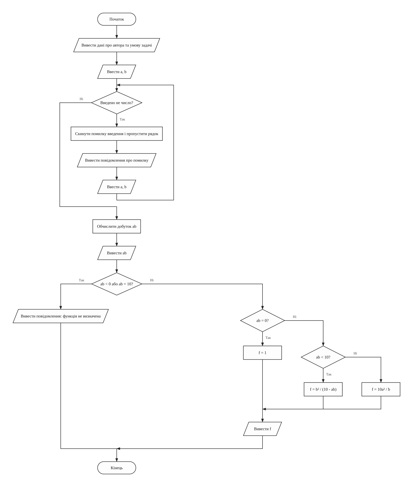
main (головна функція: обчислення значення функції f)Завдання 2 - варіант 10

welcome (виведення даних про автора та умови задачі)
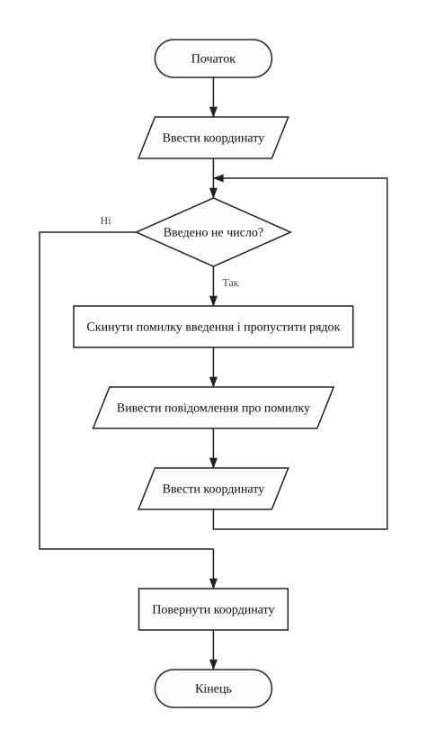
inputCoordinate (введення однієї координати з перевіркою)
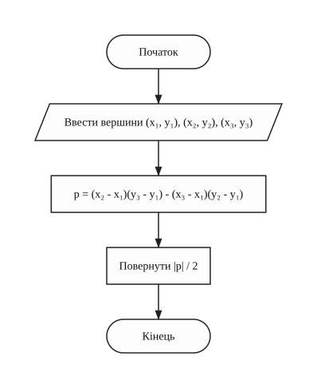
calculateArea (обчислення площі трикутника за координатами вершин)
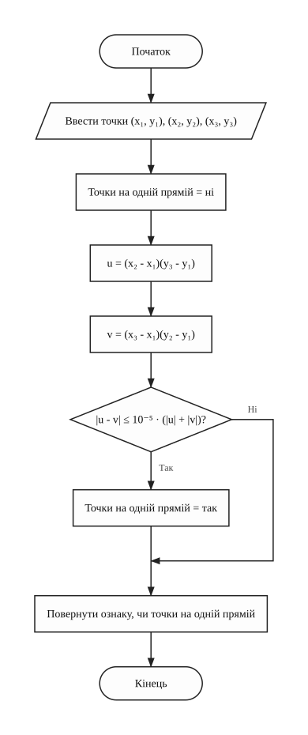
isOnOneLine (перевірка, чи лежать три точки на одній прямій)
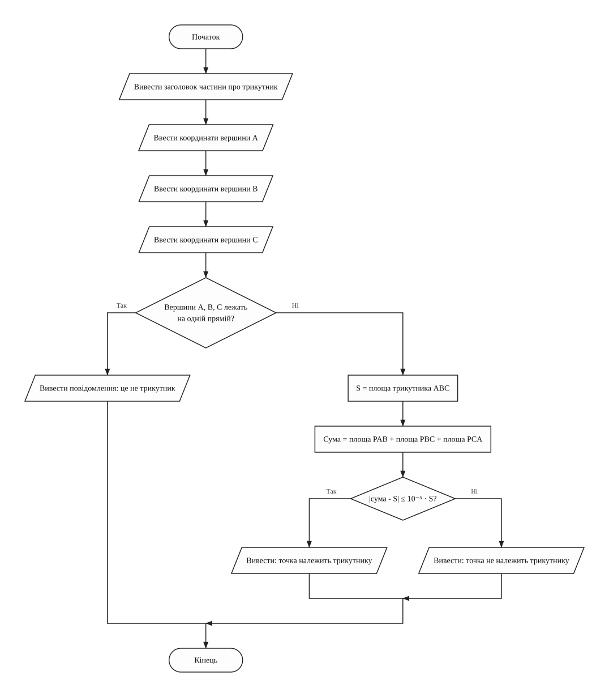
checkTriangle (введення вершин і перевірка належності точки трикутнику)
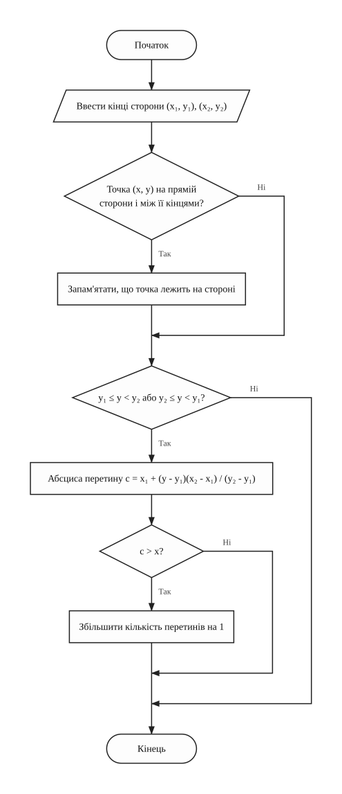
checkSide (обробка однієї сторони багатокутника)
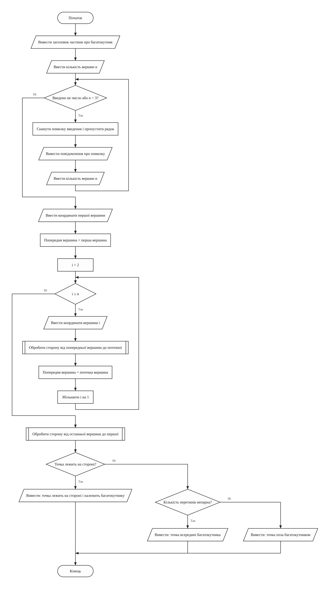
checkPolygon (введення вершин і перевірка належності точки багатокутнику)
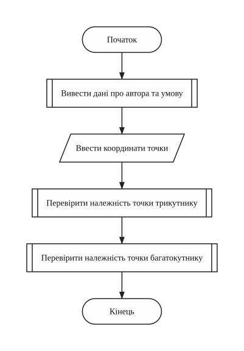
main (головна функція)Лабораторна робота №2 / 05 з 08
5. Тексти програм
Завдання 1 - варіант 6
Файл task1.cpp
/////////////////////////////////////////////////////////////////////
// Ім'я файлу: task1.cpp
// Автор: Шимко Матвій, гр. ІПЗ-11(3)
// Номер версії модуля: version 2
// Запланована ціль: лабораторна робота №2, завдання 1, варіант 6.
// Обчислити значення функції f, формула якої
// залежить від добутку ab.
/////////////////////////////////////////////////////////////////////
#include <iostream>
using namespace std;
//=========== константи
const float BORDER = 10; // межа добутку ab з умови
const float MULTIPLIER = 10; // множник у формулі 10a^2 / b
//=========== глобальні змінні
float a = 0; // перший аргумент
float b = 0; // другий аргумент
float product = 0; // добуток ab
float value = 0; // значення функції f
/*
* Функція вводить a і b, вибирає формулу за значенням добутку ab
* і виводить значення f. Для ab < 0 і ab = 10 функція не визначена
* Параметри: немає
* Значення, що повертаються: 0
*/
int main()
{
cout << "Lab work 2. Task 1. Variant 6." << endl;
cout << "Author: Matvii Shimko, group IPZ-11(3)" << endl << endl;
cout << "Calculate the function" << endl;
cout << " b^2 / (10 - ab), 0 < ab < 10" << endl;
cout << "f = 10a^2 / b, ab > 10" << endl;
cout << " 1, ab = 0" << endl << endl;
cout << "Enter a and b: ";
cin >> a >> b;
while (cin.fail())
{
cin.clear(); // скинути помилку введення
cin.ignore(1000, '\n'); // і пропустити неправильний рядок
cout << "Error! Enter two numbers: ";
cin >> a >> b;
}
product = a * b;
cout << "ab = " << product << endl;
if (product < 0 || product == BORDER)
{
cout << "The function is not defined for these a and b." << endl;
}
else
{
if (product == 0)
{
value = 1;
}
else if (product < BORDER)
{
value = b * b / (BORDER - product);
}
else
{
value = MULTIPLIER * a * a / b;
}
cout << "f = " << value << endl;
}
return 0;
}
Завдання 2 - варіант 10
Файл task2.cpp
/////////////////////////////////////////////////////////////////////
// Ім'я файлу: task2.cpp
// Автор: Шимко Матвій, гр. ІПЗ-11(3)
// Номер версії модуля: version 2
// Запланована ціль: лабораторна робота №2, завдання 2, варіант 10.
// Перевірити, чи належить точка площини трикутнику
// і багатокутнику, вершини яких вводяться.
/////////////////////////////////////////////////////////////////////
#include <cmath>
#include <iostream>
using namespace std;
//=========== константи
const int MIN_VERTICES = 3; // найменша кількість вершин багатокутника
const float ACCURACY = 0.00001f; // відносний допуск порівняння чисел float
//=========== глобальні змінні
float pointX = 0; // абсциса точки, що перевіряється
float pointY = 0; // ордината точки, що перевіряється
float vertexAX = 0; // абсциса вершини A трикутника
float vertexAY = 0; // ордината вершини A
float vertexBX = 0; // абсциса вершини B
float vertexBY = 0; // ордината вершини B
float vertexCX = 0; // абсциса вершини C
float vertexCY = 0; // ордината вершини C
float triangleArea = 0; // площа трикутника ABC
float areasSum = 0; // сума площ PAB, PBC, PCA
int vertexCount = 0; // кількість вершин багатокутника
float startX = 0; // абсциса першої вершини багатокутника
float startY = 0; // ордината першої вершини
float previousX = 0; // абсциса попередньої вершини
float previousY = 0; // ордината попередньої вершини
float currentX = 0; // абсциса поточної вершини
float currentY = 0; // ордината поточної вершини
int crossingCount = 0; // кількість перетинів променя зі сторонами
bool isOnSide = false; // чи лежить точка на стороні багатокутника
float crossingX = 0; // абсциса перетину сторони з променем
int i = 0; // лічильник вершин
/*
* Функція виводить дані про автора та умову задачі
* Параметри: немає
* Значення, що повертаються: немає
*/
void welcome()
{
cout << "Lab work 2. Task 2. Variant 10." << endl;
cout << "Author: Matvii Shimko, group IPZ-11(3)" << endl << endl;
cout << "Check whether the point (x, y) belongs to" << endl;
cout << "- the triangle A(x1, y1), B(x2, y2), C(x3, y3)" << endl;
cout << "- the polygon A1(x1, y1), ..., An(xn, yn)" << endl << endl;
}
/*
* Функція вводить одну координату. Якщо введено не число,
* введення повторюється. Підказку виводить той, хто її викликає
* Параметри: немає
* Значення, що повертаються: введена координата
*/
float inputCoordinate()
{
float coordinate = 0;
cin >> coordinate;
while (cin.fail())
{
cin.clear(); // скинути помилку введення
cin.ignore(1000, '\n'); // і пропустити неправильний рядок
cout << "Error! Enter a number: ";
cin >> coordinate;
}
return coordinate;
}
/*
* Функція обчислює площу трикутника за координатами його вершин
* Параметри: firstX, firstY, secondX, secondY, thirdX, thirdY - вершини
* Значення, що повертаються: площа трикутника
*/
float calculateArea(float firstX,
float firstY,
float secondX,
float secondY,
float thirdX,
float thirdY)
{
float doubledArea = (secondX - firstX) * (thirdY - firstY)
- (thirdX - firstX) * (secondY - firstY);
return fabs(doubledArea) / 2;
}
/*
* Функція перевіряє, чи лежать три точки на одній прямій. Для цього
* порівнює два добутки різниць координат: на одній прямій вони рівні.
* Допуск залежить від самих чисел, бо float має 6-7 значущих цифр
* Параметри: firstX, firstY, secondX, secondY, thirdX, thirdY - точки
* Значення, що повертаються: true, якщо точки лежать на одній прямій
*/
bool isOnOneLine(float firstX,
float firstY,
float secondX,
float secondY,
float thirdX,
float thirdY)
{
bool isOnLine = false;
float firstProduct = (secondX - firstX) * (thirdY - firstY);
float secondProduct = (thirdX - firstX) * (secondY - firstY);
if (fabs(firstProduct - secondProduct)
<= ACCURACY * (fabs(firstProduct) + fabs(secondProduct)))
{
isOnLine = true;
}
return isOnLine;
}
/*
* Функція вводить вершини трикутника і перевіряє, чи належить йому
* точка: сума площ PAB, PBC, PCA має дорівнювати площі ABC
* Параметри: немає
* Значення, що повертаються: немає
*/
void checkTriangle()
{
cout << "Triangle" << endl;
cout << "Enter x and y of vertex A: ";
vertexAX = inputCoordinate();
vertexAY = inputCoordinate();
cout << "Enter x and y of vertex B: ";
vertexBX = inputCoordinate();
vertexBY = inputCoordinate();
cout << "Enter x and y of vertex C: ";
vertexCX = inputCoordinate();
vertexCY = inputCoordinate();
if (isOnOneLine(vertexAX, vertexAY, vertexBX, vertexBY, vertexCX, vertexCY))
{
cout << "The vertices lie on one line, it is not a triangle." << endl;
}
else
{
triangleArea = calculateArea(vertexAX, vertexAY, vertexBX, vertexBY,
vertexCX, vertexCY);
areasSum = calculateArea(pointX, pointY, vertexAX, vertexAY, vertexBX,
vertexBY)
+ calculateArea(pointX, pointY, vertexBX, vertexBY, vertexCX,
vertexCY)
+ calculateArea(pointX, pointY, vertexCX, vertexCY, vertexAX,
vertexAY);
if (fabs(areasSum - triangleArea) <= ACCURACY * triangleArea)
{
cout << "The point belongs to the triangle." << endl;
}
else
{
cout << "The point does not belong to the triangle." << endl;
}
}
}
/*
* Функція обробляє одну сторону багатокутника: перевіряє, чи лежить
* на ній точка, і чи перетинає її промінь, що йде від точки праворуч.
* Нижній кінець сторони рахується, верхній ні, тому вершина на рівні
* променя не дає зайвого перетину
* Параметри: fromX, fromY, toX, toY - кінці сторони
* Значення, що повертаються: немає
*/
void checkSide(float fromX, float fromY, float toX, float toY)
{
if (isOnOneLine(fromX, fromY, toX, toY, pointX, pointY)
&& (pointX - fromX) * (pointX - toX) <= 0
&& (pointY - fromY) * (pointY - toY) <= 0)
{
isOnSide = true;
}
if ((fromY <= pointY && toY > pointY) || (toY <= pointY && fromY > pointY))
{
crossingX = fromX + (pointY - fromY) * (toX - fromX) / (toY - fromY);
if (crossingX > pointX)
{
crossingCount++;
}
}
}
/*
* Функція вводить вершини багатокутника по одній і відразу обробляє
* кожну сторону. Пам'ятає лише першу й попередню вершини. Непарна
* кількість перетинів променя означає, що точка всередині
* Параметри: немає
* Значення, що повертаються: немає
*/
void checkPolygon()
{
cout << endl << "Polygon" << endl;
cout << "Enter the number of vertices n (at least 3): ";
cin >> vertexCount;
while (cin.fail() || vertexCount < MIN_VERTICES)
{
cin.clear(); // скинути помилку введення
cin.ignore(1000, '\n'); // і пропустити неправильний рядок
cout << "Error! Enter an integer n, at least 3: ";
cin >> vertexCount;
}
cout << "Enter x and y of vertex 1: ";
startX = inputCoordinate();
startY = inputCoordinate();
previousX = startX;
previousY = startY;
for (i = 2; i <= vertexCount; i++)
{
cout << "Enter x and y of vertex " << i << ": ";
currentX = inputCoordinate();
currentY = inputCoordinate();
checkSide(previousX, previousY, currentX, currentY);
previousX = currentX;
previousY = currentY;
}
checkSide(previousX, previousY, startX, startY); // остання сторона
if (isOnSide)
{
cout << "The point lies on a side, so it belongs to the polygon."
<< endl;
}
else if (crossingCount % 2 == 1)
{
cout << "The point is inside the polygon." << endl;
}
else
{
cout << "The point is outside the polygon." << endl;
}
}
int main()
{
welcome();
cout << "Enter x and y of the point: ";
pointX = inputCoordinate();
pointY = inputCoordinate();
cout << endl;
checkTriangle();
checkPolygon();
return 0;
}
Лабораторна робота №2 / 06 з 08
6. Результати виконання роботи
Завдання 1 - варіант 6

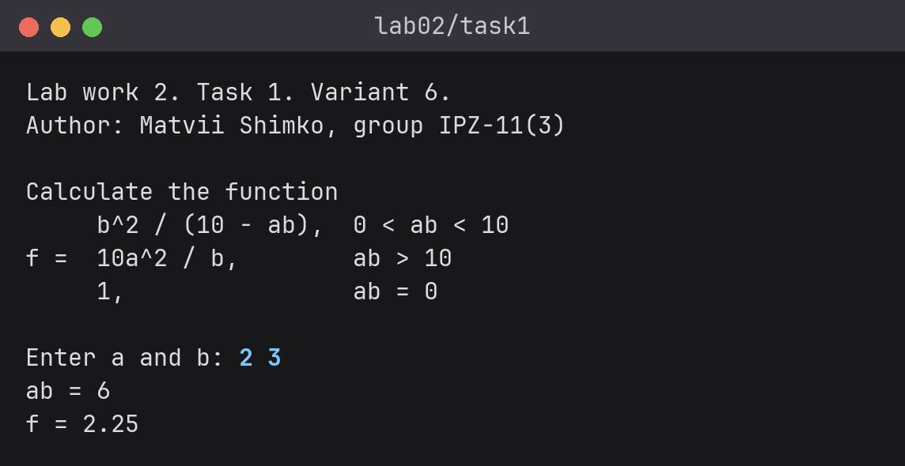

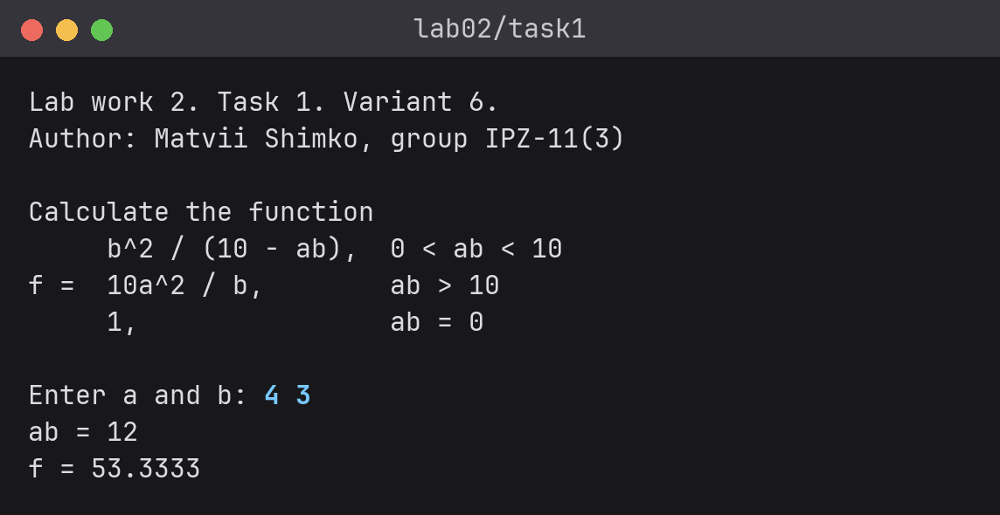


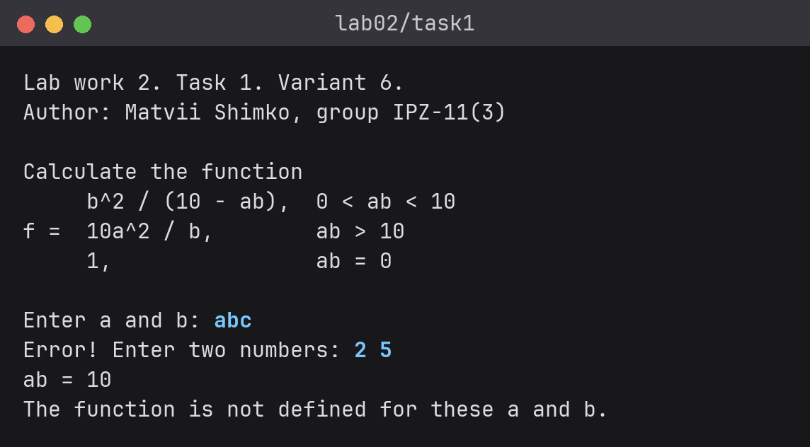
Завдання 2 - варіант 10

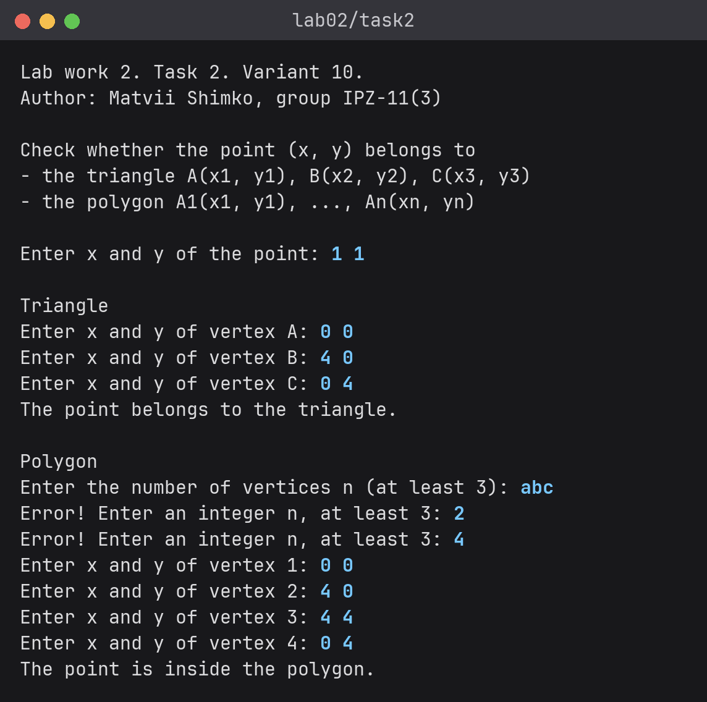

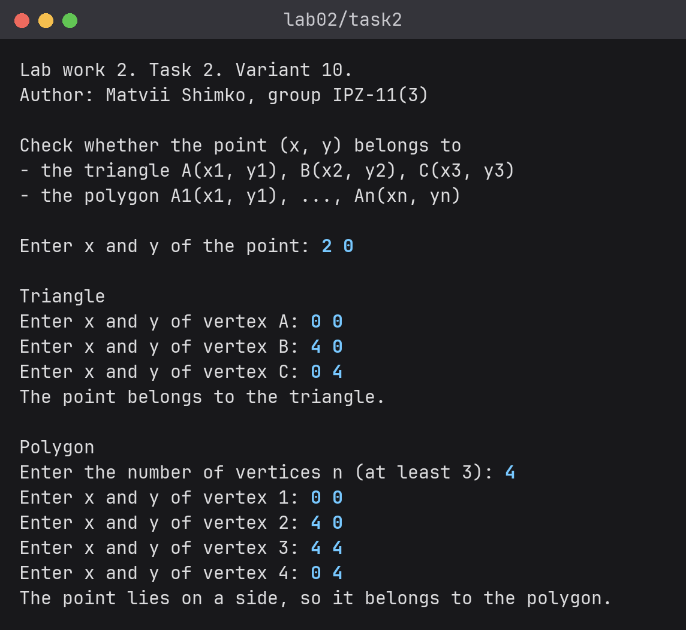

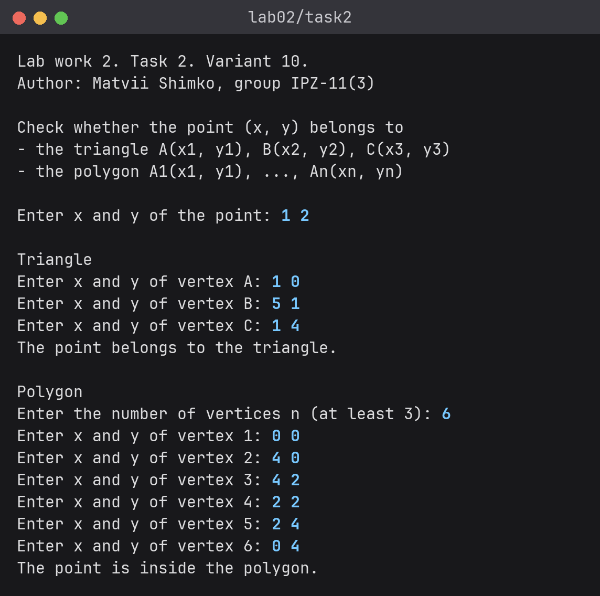

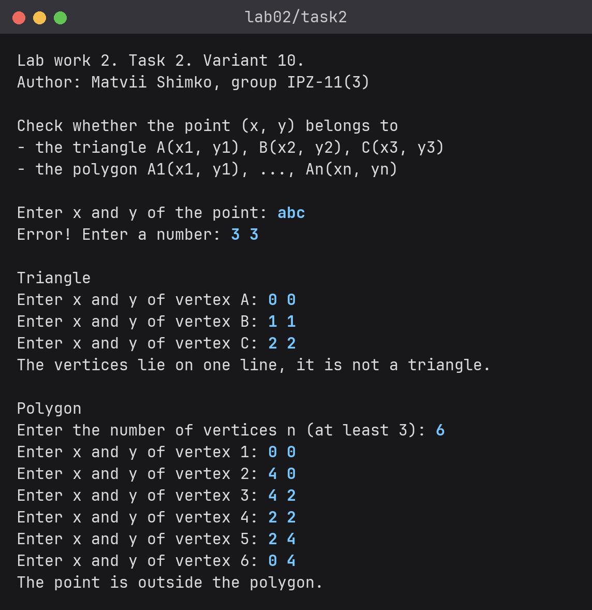
Лабораторна робота №2 / 07 з 08
7. Аналіз достовірності результатів
Завдання 1 - варіант 6
Тести охоплюють усі гілки програми. Очікуване значення пораховано вручну за формулою умови.
Таблиця 2 - Ручні тести функції f
| a | b | ab | Випадок | Ручний розрахунок | Програма |
|---|---|---|---|---|---|
| 2 | 3 | 6 | 0 < ab < 10 | 9 / (10 - 6) = 2.25 | f = 2.25 |
| 1.5 | 2 | 3 | 0 < ab < 10 | 4 / 7 ≈ 0.571429 | f = 0.571429 |
| 4 | 3 | 12 | ab > 10 | 10 · 16 / 3 ≈ 53.3333 | f = 53.3333 |
| -4 | -3 | 12 | ab > 10 | 10 · 16 / (-3) ≈ -53.3333 | f = -53.3333 |
| 0.5 | 40 | 20 | ab > 10 | 10 · 0.25 / 40 = 0.0625 | f = 0.0625 |
| 0 | 5 | 0 | ab = 0 | 1 | f = 1 |
| 5 | 0 | 0 | ab = 0 | 1 | f = 1 |
| 2 | 5 | 10 | ab = 10 | не визначена | повідомлення |
| 2.5 | 4 | 10 | ab = 10 | не визначена | повідомлення |
| -2 | 3 | -6 | ab < 0 | не визначена | повідомлення |
Якщо ввести abc, програма виводить Error! Enter two numbers: і чекає на
нове введення.
Завдання 2 - варіант 10: трикутник
Площі для кожного тесту пораховано вручну за формулою з аналізу.
Таблиця 3 - Ручні тести для трикутника
| Вершини | Точка | PAB + PBC + PCA | S | Очікувано | Програма |
|---|---|---|---|---|---|
| (0, 0), (4, 0), (0, 4) | (1, 1) | 2 + 4 + 2 = 8 | 8 | належить | belongs |
| (0, 0), (4, 0), (0, 4) | (2, 0), на стороні | 0 + 4 + 4 = 8 | 8 | належить | belongs |
| (0, 0), (4, 0), (0, 4) | (0, 0), вершина | 0 + 8 + 0 = 8 | 8 | належить | belongs |
| (0, 0), (4, 0), (0, 4) | (3, 3) | 6 + 4 + 6 = 16 | 8 | не належить | does not belong |
| (0, 0), (4, 0), (0, 4) | (-1, 1) | 2 + 8 + 2 = 12 | 8 | не належить | does not belong |
| (1, 0), (5, 1), (1, 4) | (1, 2), на стороні | 4 + 4 + 0 = 8 | 8 | належить | belongs |
| (0, 0), (1, 1), (2, 2) | (3, 3) | - | 0 | не трикутник | повідомлення |
Завдання 2 - варіант 10: багатокутник
Перетини променя підраховано вручну за малюнком. Квадрат має вершини (0, 0), (4, 0), (4, 4), (0, 4). Неопуклий багатокутник у формі літери L має вершини (0, 0), (4, 0), (4, 2), (2, 2), (2, 4), (0, 4).
Таблиця 4 - Ручні тести для багатокутника
| Багатокутник | Точка | Перетини праворуч від точки | Очікувано | Програма |
|---|---|---|---|---|
| квадрат | (1, 1) | 1 (сторона x = 4) | всередині | inside |
| квадрат, вершини в оберненому порядку | (1, 1) | 1 | всередині | inside |
| квадрат | (3, 3) | 1 | всередині | inside |
| квадрат | (2, 0) | точка на стороні | належить | lies on a side |
| квадрат | (0, 0) | точка у вершині | належить | lies on a side |
| квадрат | (-1, 1) | 2 (x = 0 і x = 4) | зовні | outside |
| L | (1, 2) | 1 (сторона x = 2), промінь іде через вершини (2, 2) і (4, 2) | всередині | inside |
| L | (3, 1) | 1 (сторона x = 4) | всередині | inside |
| L | (3, 3) | 0 | зовні | outside |
| L | (5, 2) | 0 | зовні | outside |
| L | (3, 2) | точка на стороні | належить | lies on a side |
Якщо ввести abc або 2 замість кількості вершин, програма виводить
Error! Enter an integer n, at least 3:. Літери замість координати дають
Error! Enter a number:. У всіх тестах результат програми збігся з очікуваним.
Лабораторна робота №2 / 08 з 08
8. Висновки
Розроблено дві програми з розгалуженнями, у них застосовано вкладені конструкції if і
логічні оператори && та ||. Перша вибирає формулу за значенням
добутку ab і повідомляє, коли функція не визначена. Друга перевіряє точку для трикутника через суму
площ, а для простого багатокутника через кількість перетинів променя зі сторонами. Масиви ще не вивчалися, тому кожна сторона обробляється відразу під час введення. Усі ручні тести дали очікувані результати.